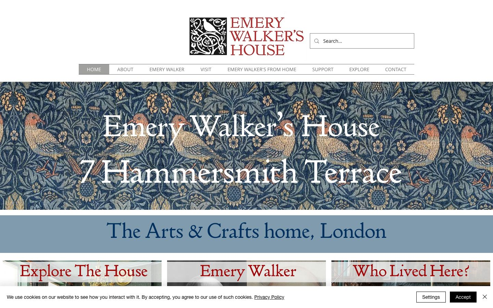

References / Website / 170
Emery Walker’s House website
The house museum of Morris’s typographic adviser puts a woven Morris bird pattern behind its title and sets its headings in a red old-style serif.
- Source
- emerywalker.org.uk
- Creator
- Emery Walker Trust
- Style
- Arts and Crafts (agent-proposed, not yet reviewed by a person)
- Moods
- Handmade, dense, domestic
- Evidence
- Captured with
tools/capture.mjs(headless Chrome, 1440 × 900) on 28 September 2026 and inspected. The screenshot shows the first viewport; the measurement covers up to four screens. A cookie bar covers the bottom 60 px of the viewport. - Reviewed
- Rights
- Third-party work, stored with credit for commentary. License: unverified. Rights policy
Observed
- The logo is a square black-and-white woodcut-style device of a bird in interlaced vines, beside “EMERY WALKER’S HOUSE” in three lines of red serif capitals.
- A thin grey rule runs above and below a row of small grey capital navigation labels.
- The hero is a full-width photograph of a woven textile: pairs of salmon and cream birds among dense leaves and flowers on dark indigo. “Emery Walker’s House” and “7 Hammersmith Terrace” sit over it in large white serif type.
- A slate-blue band below holds “The Arts & Crafts home, London” in dark blue old-style serif.
- Three photo cards at the bottom carry headings such as “Explore The House” in large red serif on a pale band.
- A white cookie bar with a black Accept button covers the bottom edge.
Why it belongs
The pattern is a photographic image, so color.patternShare measures 0 even though the hero is the densest area of the page; the site shows the limit of the metric.
Measured: square corners (radius 0), accent chroma 0.36, and a shadow share of 0.15 from the cookie bar and cards.
The red serif headings over cream and indigo come close to the rubric’s red headings on a dye palette.
Borrow
Set white serif display type directly over a dark, dense textile image, and let the pattern do the work of a hero photograph.
Pair a square black-and-white device with a red serif wordmark.
Measured
Machine-extracted by tools/extract-traits.js on . Full measurement.
- Type families
- open sans (57%), HelveticaNeue (28%), wfont_db8a41_f0222703fc00412193b1b972b237d1ce (10%)
- Type scale ratio
- 1.43
- Median radius
- 0 px
- Mean chroma
- 0.01
- Palette
- #ffffff 89%
- #000000 5%
- #707070 3%
- #809bae 2%
- #002e5d 1%
- #a0a09f 0%

